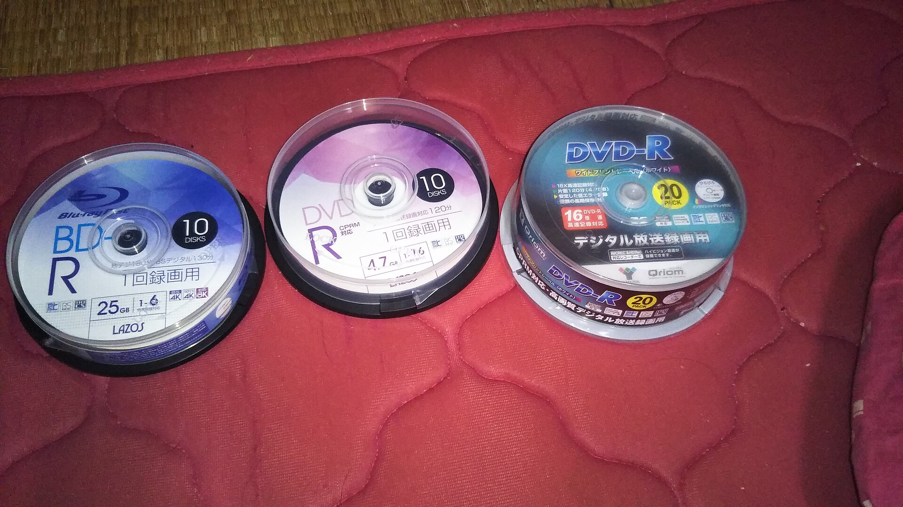

Sony and Phillips decided to not pursue VHS tapes and decided to support Toshiba and Matsushita's Super Density Disc in the mid-1990s. It was launched in Japan on Nov. 1, 1996, mostly for music video releases.
Soon, the companies produced the DVDS in America in that winter and properly released the DVD domestically on March 24, 1997. Most of the DVDs available at the launch were from Time Warner's library (Warner Bros., New Line Cinema, and Fine Line Pictures). It's popular title was Twister (1996). Following testing the product and ensuring privacy laws, the DVD was launched nationwide on August 22, 1997.
HP started to create recordable DVDs for users to store data.
DVD-R and DVD+R could only be written once where as DVD-RW and DVD+RW gives users the ability to rewrite the discs.
To protect the work from privacy, DVD forum constructed the Content Scramble System. It also protects the disc's playability in certain regions (e.g. Region 1 and A for America).
| Film | Copies Sold |
|---|---|
| Finding Nemo | 38,8000,000 |
| Cars | 23,100,000 |
| Spider-Man | 19,500,000 |
DVDs created more capabilities than VHS tapes. It has more room to include special features, audio commentaries. Because DVD could play at earlier computers or portable players in the car, you don't need WI-FI to play them.
Copyright (c) Edward Frumkin 2026